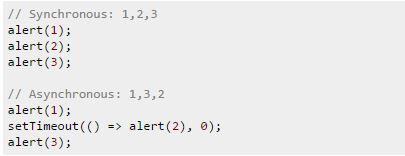

Welcome back! Today I will be taking a glance at Nodejs. I will just scratch the surface of it by explaining what it is and giving some examples. If you would like to add to anything I put up here, feel free. I enjoyed the feedback I received from my last post. Please keep it up!
Introduction
So to start us off here, how about we look at the background of NodeJs. Node is an open source, cross-platform runtime environment for server-side and networking applications.
This platform is built on Chrome's JavaScript runtime.
What makes it so great?
Well, there are a few things I'd like to point out about node:
- It is great for real-time applications
- Non blocking I/O model (Asynchronous)
- It has a built-in library
- Uses Google V8 JavaScript engine
Let's take a closer look!
Node is great for scalable applications because many connections can be handled concurrently.
Node uses non blocking I/O which is a form of input/output processing that permits other processing to continue before transmission is completed. This is great because code does not have to execute in sequence. Here is a great example from Stack Overflow:

In the asynchronous example, 2 would appear to output second, but it does not.
This characteristic of node is what sets it apart from other (sequential) server-side languages such as PHP.
Node allows you to perform other tasks while you wait. It is not buffering data into memory, but outputting chunk by chunk. Node is single-threaded. It registers a callback and lets the program continue instead of making it wait. So, you can handle operations at the same time without multiple threads of execution, making it very scalable.
Take a look at some example node code
var http = require('http'); http.createServer(function (req, res) { res.writeHead(200, {'Content-Type': 'text/plain'}); res.end('Hello World\n'); }).listen(1337, '127.0.0.1'); console.log('Server running at http://127.0.0.1:1337/');This simple web server written in Node responds with "Hello World" for every request.
Go try it out!
Here are some sources you can check out: